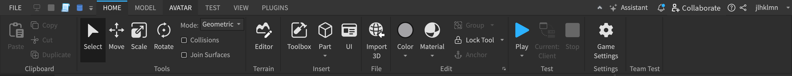

Explorer & Properties Tab, Tools & Workspace
Introduction
You'll have to get to know the simpliest controls of Roblox Studio in order to make experiences efficiently and professionally. Here we will talk about the very basics that you will know for most of your development journey.

This is the toolbar. It is located above your screen when you're editing an experience, and it has everything you'll need. Here you can find lots of important buttons, such as the Transformation tools, Properties and Explorer tab, etc.
Explorer & Properties Tab
Under the View tab, you can find the two tabs which you will be using a lot: the Explorer and Properties tab. These tabs allow you to control most things. The Explorer is like a list, which shows you all the Parts, Scripts or Local Scripts, and other objects. You can select them and click 'F' to go to them if they are a part, and if they're a script you can double click to open them. While having them selected, you can see their properties under the Properties tab. All object contains different properties, some properties may be in multiple types of objects while some may not be.
Transformation Tools
The Transformation Tools are what allows us to build with our imagination. There are three types of main tools; Move, Scale and Rotate. Parts, Models and other similar objects can be modified using these tools.
Workspace Environment
This is your workspace. You can go around this virtual environment by moving the camera around. Left click allows you to select objects, and dragging right click can change your looking direction. Use 'A, S, W, D' to move horizontally, and 'Q, E' for vertical movement. Using this space, you can create your game by changing parts around using the transformation tools.
Basics of Properties
While selecting any types of objects or parts, you can view their properties under the Properties Tab. They define the description of an object, such as Color, CFrame (position + rotation), Anchored (wether the part falls along gravity), CanCollide (wether if the part can go through other parts), and many others.
Tip: You can look more into detailed for each property of an object by heading to the Docs and searching for the object. All information about the object will be listed, including properties.
Common Properties
Here are some properties that commonly appears throughout Parts:
Anchored: Determines if the part falls along gravity or is stuck in place.
Color/BrickColor: Determines what color the part is.
CanCollide: Determines if the part can be touched.
CFrame: Determines the part's position and orientation.
Material: Determines the part's material texture (affects physics interactions).
CastShadow: Determines if the part will show its shadow.
Transparency: Determines the part's visibility.
Understanding the Explorer Tab

The Explorer is like a list of all the parts, objects, scripts, etc and it shows the object's path location. The path location is usually used in scripting, but to explain it in an easy way, it's basically which folders your file is under (Folder represents the Parent of the object, where the file represents the Child/targetting object).
Parts, Meshes, Decals & Textures
Parts
Parts are one of the core building blocks all Roblox games. They are what makes the game visually appealing and having good visuals can attract players into playing your games.

Meshes
Meshes are useful when building your experience. They are parts with 3D-models attached into them. A free popular option for creating 3D-models is Blender, and it's used among many developers and even film makers. 3D-models allows more detailed and complex parts to be created, which may be a struggle to do so by only using parts provided by Roblox Studio alone.
Decals & Textures
The Color and Material property is helpful when theming your game. To customize even further, you can use Decals or Textures. Decals are basically images displayed on specified sides on a part. Textures are a type of decal, except the image repeats forever, creating an iterating pattern.
Services
Services can be useful in many instances. They are usually used in scripts, but some are also used outside of scripts. Some examples are ReplicatedStorage or ServerStorage, which are used for storing objects, Lighting, which manages the atmosphere of the game, StarterPlayer, which allows you to change the default player's behavior, etc.
ReplicatedStorage and ServerStorage both stores objects. In online-game development, there are two sides; Client and Server. The server usually handles the data and client handles the visuals, also meaning the client is your computer, and exploiters can modify their client to cheat in games. ReplicatedStorage can be accessed by the client while ServerStorage cannot, so usually things you don't want exploiters to easily mess with you would store in ServerStorage. Although do keep in mind, there isn't really a way for the client to access things inside ServerStorage so usually model assets are stored in ReplicatedStorage.
If you are still new to scripting there will be some struggles understanding this. If you want to learn about scripting, you can find the guide for scripting back at the homepage.